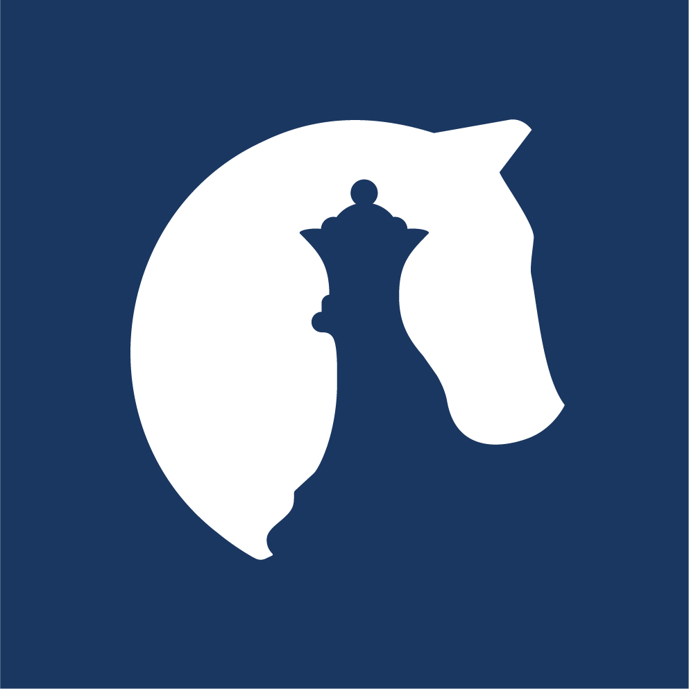

Bepalen hoe een goed antwoord eruitziet, voordat je de vraag stelt
AIRA-training · Den Haag · dinsdag 13 oktober 2026 · 09:00–10:15
Stephan De SpiegeleirePrincipal Scientist, The Hague Centre for Strategic Studies (HCSS)

Van de vraag v1 van maandag naar de vraag v2 van dinsdag: eerst de vraag, dan de prompt.
Vraag v1
Projectkick-off: je groep erft een studie en de dataset
Vraag v1 plus drie deelvragen
Aanscherpen
Van een vage naar een toetsbare vraag
Vooraf bepalen wat een goed antwoord is
Lezen en verkennen
10:30 Rusland Lezen (Liliia)
11:20 Ken je Bronnen: wat zit er in je dataset?
Relevantieprompt
Geschreven voor je eigen onderzoeksvraag
Getest op 100 fragmenten uit je dataset, met JSON‑output
Vraag v2
Projectwerk
Oplevering: v2 plus een relevantieprompt, getest op 100 fragmenten
Effective Deterrence – de studie die je groep misschien erft. Bron, met citaten in het Engelse origineel: HCSS-voorstel aan het Commando Landstrijdkrachten (CLAS) na het overleg van 29 augustus 2025.
Overleg met de Landmacht (CLAS)
CLAS komt met eigen vragen
Vraag 2 wordt het onderwerp “Effective deterrence”
Verbreed tot vier onderzoeksvragen
“broadened in line with the face-to-face discussion with CLAS”
1“How does Russia perceive (read: is constrained by) the various forms of NATO deterrence in the new NATO Force Model (NFM) …”
2“What is deemed the most effective deterrence …”
3“What does the Kremlin consider a credible deterrence of the West/Europe, in terms of capabilities (nuclear, military conventional and otherwise) and political will?”
4“More specific: how is NFM’s deterrence by denial (in situ forces) versus deterrence by punishment perceived, the latter in particular through deep strike in the early phase of a military conflict?”
Een quick scan van het corpus
“the first step is to run a quick scan to determine whether the corpus holds enough substance for a meaningful analysis.”
De les
Een ontvangen vraag is het begin van het werk, geen onderzoeksvraag.
Stap één: kan je corpus haar beantwoorden?
Elke sport maakt de vraag concreter. Illustratie over het thema afschrikking, geschreven voor deze sessie.
“Werkt de afschrikking van de NAVO op Rusland?”
Hoe zien Russische bronnen de afschrikkingshouding van de NAVO in Europa?
Hoe framen Russische officiële bronnen en expertbronnen de vooruitgeschoven NAVO-troepen op de oostflank in 2024–2025: als dreiging, als bluf of als beperking?
(a) Welke NAVO-maatregelen noemen ze het vaakst? (b) Hoe wordt elke maatregel geframed? (c) Verschilt de framing tussen officiële bronnen en expertbronnen?
Fragmenten die een NAVO-maatregel noemen en typeren, geteld per maand en per brontype. Als afschrikking beperkt, verwacht je na verloop van tijd meer framing als “beperking”.
Transparent Battlefield: het corpus bevat wat Russische bronnen zeggen, niet wat is.
Transparent Battlefield · de centrale onderzoeksvraag van het rapport (Engels origineel)
To what extent does the emergence of the “transparent battlefield,” according to the Russians, influence the character of the fighting in Ukraine?
Corpus: Russischtalige teksten (RUW-taxonomie) plus andere bronnen · 14 databases: officieel, expert- en socialemediacommentaar · HCSS, From the Fog of War to the Fever of Exposure, §2.1–2.2
Te beantwoorden uit de tekst
bijv. Noemen oorlogscorrespondenten op Telegram dronesurveillance vaker dan officiële bronnen?
Met voorzichtigheid af te leiden
bijv. Behandelt de militaire leiding contrasurveillance als prioriteit? Alleen voor zover haar uitspraken en hun timing dat suggereren.
Niet te beantwoorden uit dit corpus
bijv. Hoeveel Russische drones vliegen werkelijk verkenning aan een bepaald front?
“Hot topics”: het verzoek van de klant, en de eigen notitie van HCSS over wat het open laat.
Het verzoek · ‘Hot topics’ in het actuele discours (Engels origineel)
“What are the most salient / upcoming & interesting topics in the current (3 months bracket) Russian and Ukrainian discourse?”
HCSS-voorstel aan het Commando Landstrijdkrachten (CLAS), na het overleg van 29 augustus 2025
De eigen notitie van HCSS, zelfde document
“we must also define what we mean by both ‘hot’ (e.g. ‘most mentioned’!?) and ‘topic’ (e.g. actor!?)”
Ook mogelijk: hot = snelst stijgend, meest omstreden · topic = gebeurtenis, wapensysteem, narratief
Telling
hoeveel, hoe vaak
Trend
verandering in de tijd
Vergelijking
A tegenover B
Typologie
soorten X
Rangorde
de top N
illustratie V: Welke actoren (onderwerp = actor) stegen dit kwartaal het sterkst in Russische bronnen?
Slecht antwoord
“Het discours wordt gedomineerd door drones, mobilisatie en de economie.” Vloeiend, aannemelijk, onmogelijk te controleren.
Goed antwoord
Tien actoren naar aandeel fragmenten, met de verandering t.o.v. vorig kwartaal, twee geciteerde fragmenten per actor, en de handmatig gecontroleerde steekproef die het bevestigt.
Ex ante · vanochtend
vooraf bepalen wat goede antwoorden zijn
Interim · vanmiddag
bijsturen terwijl de prompt 100 fragmenten tegenkomt
Ex post · donderdag
achteraf valideren: mensen controleren een steekproef
Elk gat dat je laat, vult een taalmodel met zijn eigen standaardaanname.
Afgebakend
Ze noemt de periode, de brontypen en de actoren.
Blijft het open, dan neemt het model aan
“Rusland” in het algemeen, elk jaar, elke bron
Gedefinieerd
De kernbegrippen zijn gedefinieerd, ook zoals ze in het Russisch voorkomen.
Blijft het open, dan neemt het model aan
zijn eigen alledaagse betekenis
Observeerbaar
Het antwoord blijkt uit tekst die in dit corpus zit.
Blijft het open, dan neemt het model aan
feiten uit zijn trainingsdata, niet uit je corpus
Vormgegeven
De vorm van het antwoord staat vooraf vast.
Blijft het open, dan neemt het model aan
een vloeiend essay dat je niet kunt controleren
Verrasbaar
Het antwoord kan tegen je in uitvallen.
Blijft het open, dan neemt het model aan
wat jij al lijkt te denken
Grey-Zone Warfare: één HCSS-onderzoeksvraag langs de vijf toetsen.
Grey-Zone Warfare · HCSS-voorstel aan het Commando Landstrijdkrachten (CLAS), na 29 augustus 2025 · Engels origineel
“How does the Kremlin perceive (1) our (alleged) hybrid actions against Russia; and (2) our counter measures and societal resilience – both nationally and as a collective (NATO/EU)?”
1 · Afgebakend
Gat: geen periode, geen brontypen; “het Kremlin” kan Poetin zijn, Buitenlandse Zaken, staatsmedia of loyale commentatoren.
Fix: noem de periode, de brontypen en welke stemmen meetellen.
2 · Gedefinieerd
Gat: hybride acties, tegenmaatregelen en maatschappelijke weerbaarheid zijn niet gedefinieerd, noch hier, noch in het Russisch.
Fix: bepaal wat telt als elk begrip, en welke Russische woorden het signaleren.
3 · Observeerbaar
Gat: “perceive” (waarnemen) is een gemoedstoestand; het corpus toont alleen wat er gezegd wordt.
Fix: vraag hoe de bronnen beschrijven en framen, niet wat ze waarnemen.
4 · Vormgegeven
Gat: geen vorm voor het antwoord: een lijst, een trend, een vergelijking van nationale en NAVO/EU-maatregelen?
Fix: kies een vorm voor elke deelvraag.
5 · Verrasbaar
Gat: “Moskou noemt westerse acties vijandig” is het verwachte antwoord, en dat vind je hoe dan ook.
Fix: vraag ook iets dat beide kanten op kan vallen.
Een mogelijke aanscherping illustratie, ter discussie
Hoe beschrijven officiële Russische verklaringen en Russische staatsmedia in [de periode die je dataset beslaat] (1) westerse acties die zij hybride noemen, en (2) westerse tegenmaatregelen en maatschappelijke weerbaarheid, nationaal en NAVO/EU?
DV1 Welke westerse acties worden hybride genoemd, en hoe vaak per kwartaal?
Telling + trendDV2 Worden tegenmaatregelen en weerbaarheid geframed als dreiging, als zwakte of als effectief?
Typologie: aandeel fragmenten per frameDV3 Worden nationale maatregelen (bijv. Nederlandse) anders geframed dan die van NAVO/EU?
Vergelijking: nationaal tegenover collectiefHoe formulering het antwoord laat kantelen. Thema: Rusland, de NAVO en afschrikking; alle voorbeeldvragen zijn illustraties ter discussie.
1Presuppositie
Zoals gesteld
“Waarom escaleert de NAVO?”
De premisse zit erin ingebouwd. Het model verklaart de escalatie; het toetst haar niet.
Al beslotende NAVO escaleert
Een mogelijke herformulering
“Hoe beschrijven Russische bronnen veranderingen in de houding van de NAVO, en wanneer noemen ze die escalatie?”
2De eigen woorden van het narratief
“collectieve Westen”“speciale militaire operatie”
Zoals gesteld
“Hoe probeert het collectieve Westen Rusland te verzwakken?”
De term draagt zijn frame mee, en het model antwoordt van binnenuit dat frame.
Citeer, neem niet over
“Hoe gebruiken Russische bronnen ‘collectieve Westen’, en wie rekenen ze ertoe?”
3Vertaling
сдерживание
afschrikkingenindamming
De Russische “strategische afschrikking” omvat ook niet-militaire middelen. Jouw “afschrikking” en die van de bronnen zijn misschien niet hetzelfde begrip.
Wat je doet
Definieer het kernbegrip in beide talen, en zet de Russische woorden die meetellen op een rij.
Het model vult elk gat met zijn eigen standaardaannames.
Het model geeft je gelijk. Maandag: de jaknikkersvalkuil.
De onderzoeksvragen die jullie maandag uploadden: concepten, ter bespreking. voldoet deels: zo scherp je verder aan
Effective Deterrence
v1 van maandag
“Hoe ontwikkelden zich in de periode februari 2022 tot en met december 2025, per kwartaal, de Russische nucleaire signalen richting de VS, Europese NAVO-staten en de NAVO als bondgenootschap, en de Russische representatie van de afschrikking van elk van deze partijen?”
Afgebakend periode, kwartalen, drie geadresseerden, drie brontypen
Gedefinieerd wat telt als ‘nucleair signaal’, ook in het Russisch?
Observeerbaar ‘representatie’, niet ‘inschatting’: sterk
Vormgegeven trend per kwartaal; vorm per deelvraag nog vastleggen
Verrasbaar welke uitkomst zou jullie verrassen?
v2-stap: definieer ‘nucleair signaal’ en ‘expliciet’ met de Russische signaalwoorden, en noteer per deelvraag een verrassende uitkomst.
Transparent Battlefield
v1 van maandag · één van vier varianten
“In welke mate liepen de beoordelingen van UAS-gedreven transparantie van het slagveld door Russische officiële militaire bronnen en frontlinie-milbloggers uiteen tussen februari 2022 en maart 2026, en welke lessen bieden deze verschillen voor westerse militaire commandanten?”
Afgebakend periode, twee brongroepen, vijf dimensies
Gedefinieerd ‘UAS-gedreven transparantie’ en ‘uiteenlopen’ nog uitschrijven
Observeerbaar ‘lessen voor commandanten’ staan niet in het corpus
Vormgegeven divergentiescore per dimensie en periode
Verrasbaar bronnen kunnen ook naar elkaar toe groeien
v2-stap: kies samen één variant, definieer ‘uiteenlopen’, en houd de lessen voor commandanten als duiding achteraf.
Grey-Zone Warfare
plaatshouder · v1 volgt
Jullie geüploade document kon vannacht nog niet worden opgehaald. Lees jullie v1 zo even voor; de uitgewerkte aanscherping op dia 8 gaat over jullie thema.
25 minuten, in je groep, op de studie die je hebt geërfd: Transparent Battlefield, Grey‑Zone Warfare of Effective Deterrence.
Pak de v1 van maandag
Jullie v1 van maandag en haar drie deelvragen, zoals jullie ze uploadden.
Loop de vijf toetsen langs, herschrijf
AfgebakendGedefinieerdObserveerbaarVormgegevenVerrasbaar
Schrijf goede en slechte antwoorden
Per deelvraag: de vorm van het antwoord en één goed voorbeeld, plus één antwoord dat je zou afwijzen.
Zet relevantiecriteria op een rij
Drie tot vijf voorwaarden waaraan een fragment moet voldoen om je deelvragen te helpen beantwoorden.
Mee naar 13:00
Onderzoeksvraag v2
Drie deelvragen, elk met haar antwoordvorm
Een goed en een slecht antwoord per deelvraag
3–5 relevantiecriteria
Waar je vraag v2 vandaag naartoe gaat: je eigen vraag, op je eigen dataset (Transparent Battlefield, Grey-Zone Warfare of Effective Deterrence).
Deelvragen
Drie, elk met haar antwoordvorm
Goede en slechte antwoorden opgeschreven
Relevantiecriteria
3–5 voorwaarden voor een fragment
Afgeleid van de deelvragen, niet van het thema
Relevantieprompt
Getest op 100 fragmenten uit je eigen dataset
{"relevant": "yes",
"reason": "…"}
Vraag v2, getest
Vraag en prompt bijgesteld op wat de 100 oordelen lieten zien
Interim-evaluatie: verrassende oordelen sturen je terug
Aan het eind van dinsdag
Onderzoeksvraag v2
Een relevantieprompt, getest op 100 fragmenten